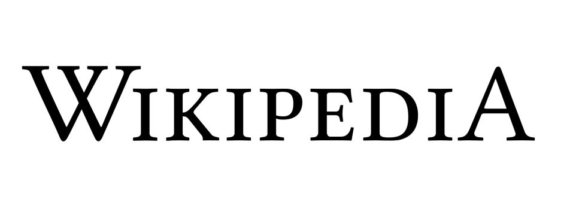

La enciclopedia libre
Español
1 681 000+ artículos
日本語
1 267 000+ 記事
Русский
1 722 000+ статей
Italiano
1 691 000+ voci
Português
1 066 000+ artigos
English
6 295 000+ articles
Deutsch
2 574 000+ Artikel
Français
2 326 000+ articles
中文
1 195 000+ 條目
Polski
1 472 000+ haseł